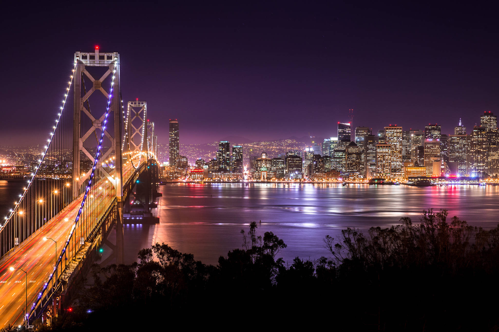
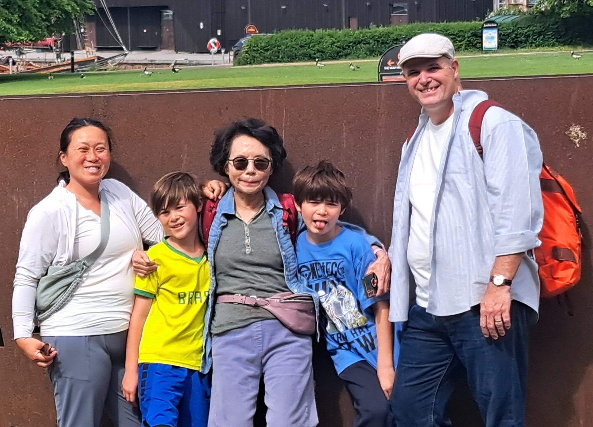
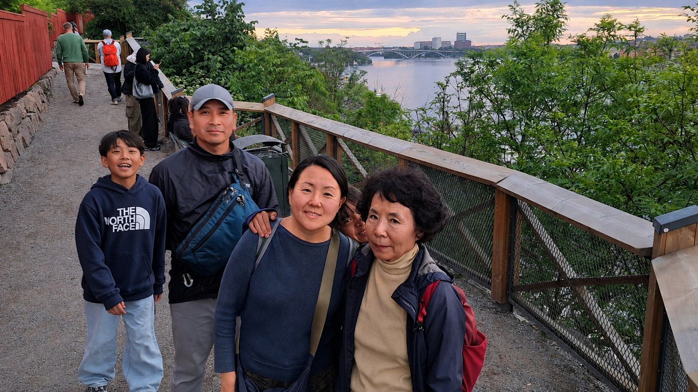
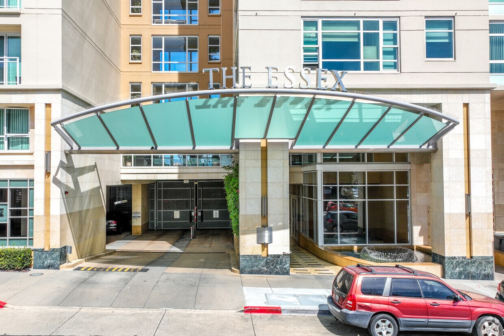

Our Next Chapter: Oakland, CA USA

We took a detour to Columbus, OH. But our destination is still Oakland, CA.
Sometimes a detour turns out to be just that—a detour. For us, the destination has always been the Bay Area.
Our Family
Our son and daughter-in-law, Matthew and Karen, live in San Francisco with our two grandsons, Ollie and Kellan. The photo below, taken in Sweden, is Karen, Kellan, Eunyoung, Ollie and Matt moving left to right.

Our daughter and son-in-law, Yoona and Lats, live in Oakland with our grandson, Maru. The photo below, taken in Sweden, is Maru, Lats, Yoona and Eunyoung from left to right.

The Essex is almost exactly where we would like to be—not only in Oakland, but roughly halfway between our two families. It would put us close enough to spend time with all three of our grandsons while making Oakland our home.
The Columbus Detour
We were actually on our way to renting a place at the Essex when Eunyoung received an unexpected job offer in Jeffersonville, Ohio. It was too good an opportunity to turn down.
So we took a detour.
In September 2025, we moved to Columbus and signed an 18-month lease. We have enjoyed our time here, but Columbus was never meant to be the final destination.
Our lease ends in March 2027. And then we're heading west.
The Essex

The Essex, at 1 Lakeside Drive in Oakland, is where we hope to begin our next chapter.
The Essex is a condominium community rather than a conventional apartment building. Individual owners sometimes offer their units for rent, which is exactly what we're looking for.
We're hoping to find a comfortable one-bedroom condo beginning in the spring of 2027—ideally a place where we can settle in, be close to our family, and make Oakland our home.
Could Your Essex Condo Be Our Next Home?

The photo above is of Eunyoung and Michael in our library at 2500 Pickwick Rd. Baltimore, MD. After our short stay in Columbus, OH, we're looking for an Essex owner who might be interested in renting to us when our Columbus lease ends in March 2027.
We're responsible, experienced renters looking for a comfortable home and hoping to stay for the long term.
If you own a condo at the Essex and are considering renting it in 2027, we'd love to hear from you.
Michael Soderstrand
202-642-8577
soderstrand@ieee.org
Perhaps your condo could be the place where our next chapter begins.